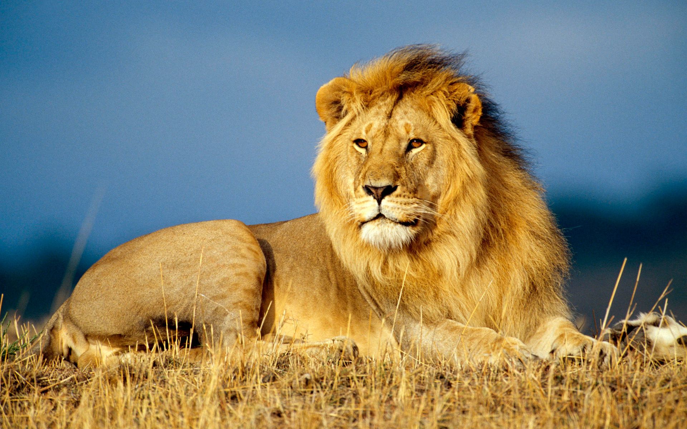

The lion (Panthera leo) is one of the largest and most powerful members of the cat family. Here is some basic information in brief: Where they live: Mostly in the African savannas (south of the Sahara) and a very small population in India (in the Gir Forest). Lifestyle: Unlike other cats, lions are social animals and live in groups called prides. Hunting: In a pride, female lions do most of the hunting, often in an organized, group manner. Their main prey are herbivores (zebras, antelopes). Appearance: The male lion has a large, dark mane that protects him during fights and makes him look bigger. The female lion does not have a mane. Activity: Lions spend about 16-20 hours a day resting and sleeping to save energy. They hunt mostly at night or at dawn. Status: They belong to vulnerable species. Their population in the wild is decreasing due to habitat loss and conflict with humans.